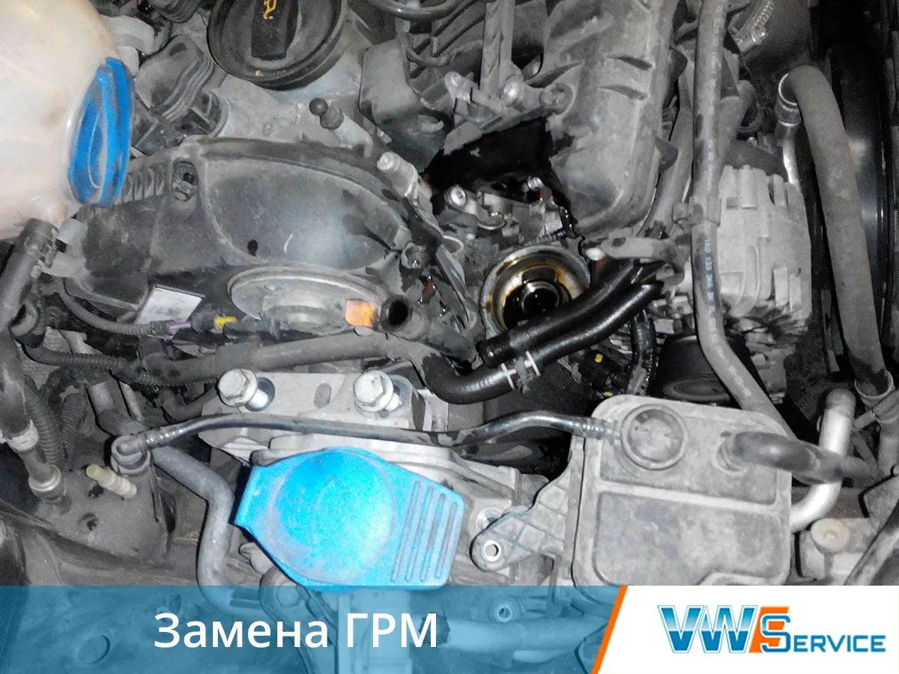
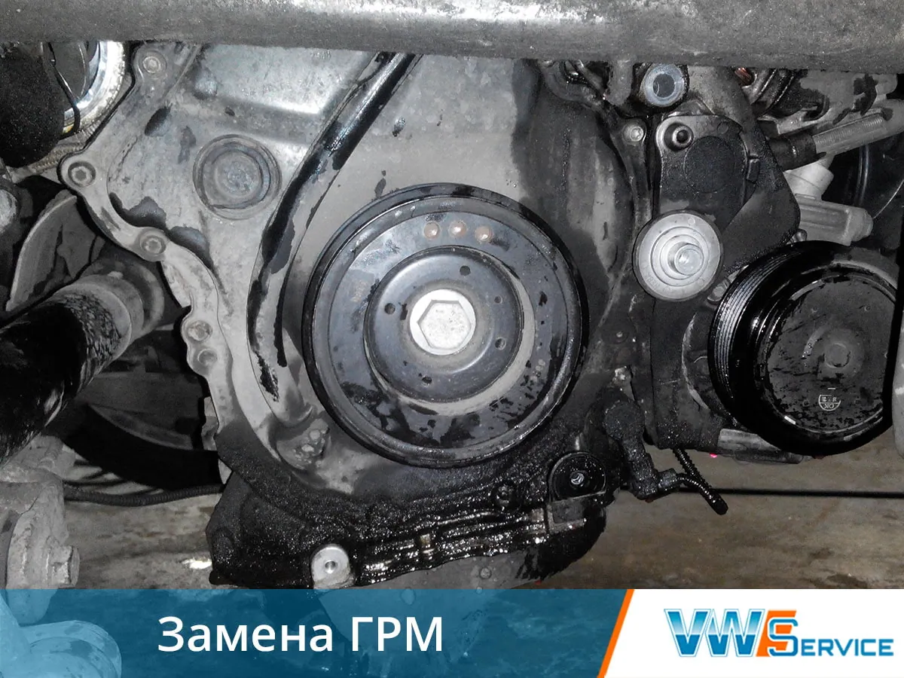
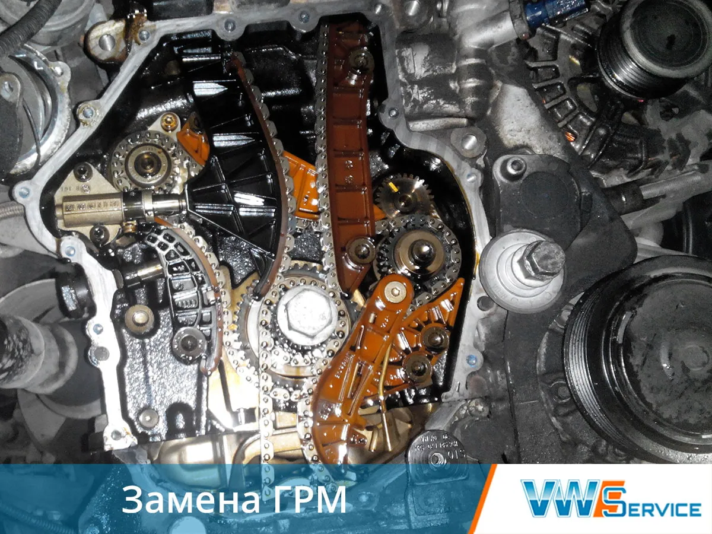
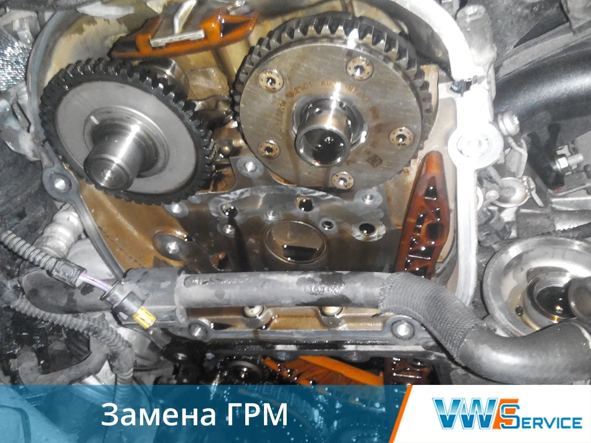
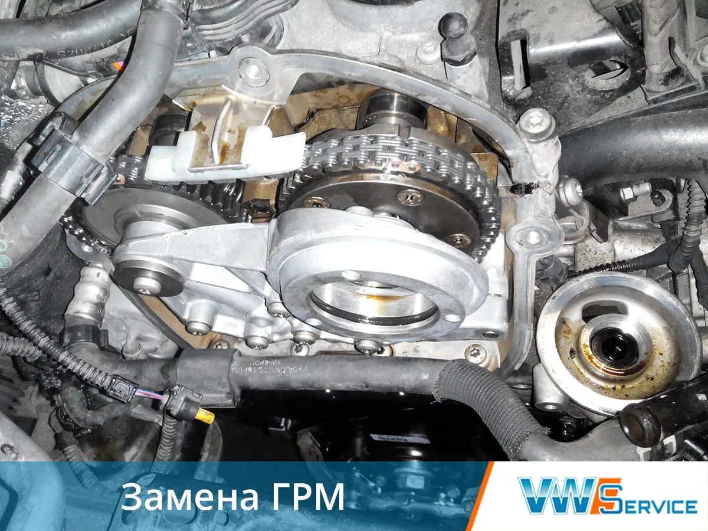
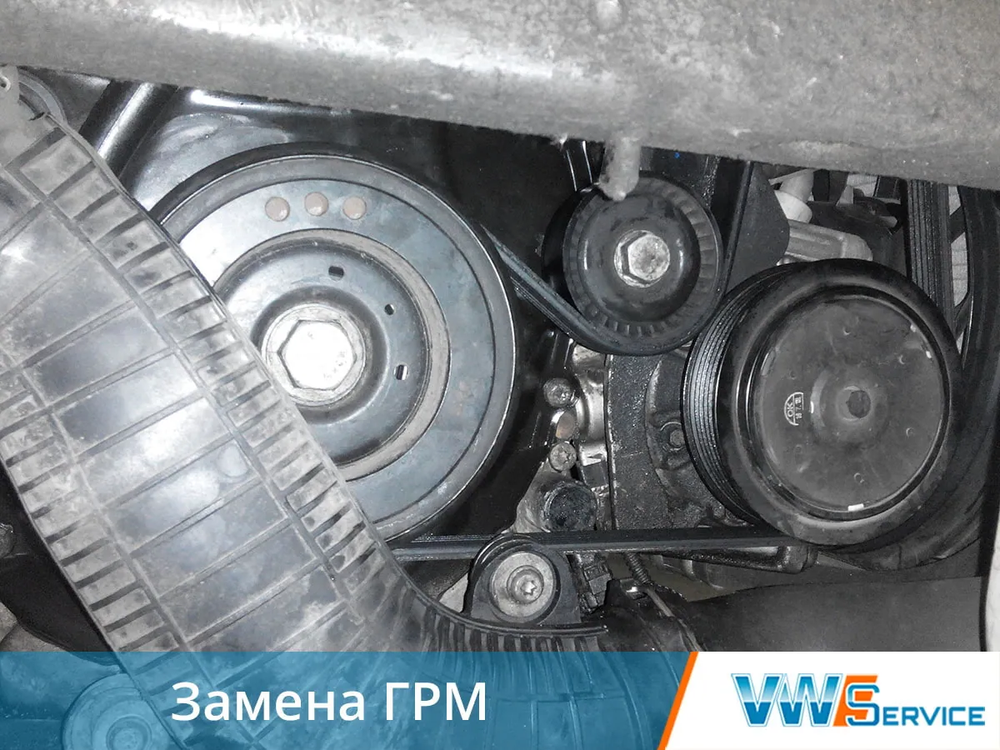
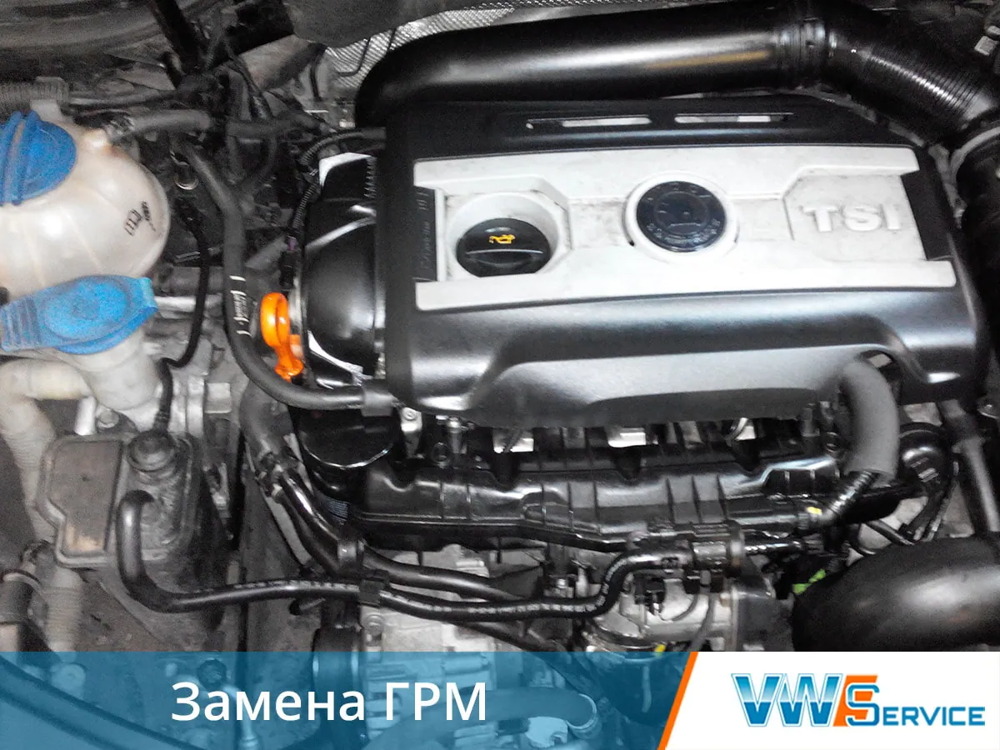

Периодичность замены ГРМ Ауди зависит от модели автомобиля и указана в технической документации. Рекомендованное значение - 50-60 тыс. км. Установить необходимость проведения процедуры можно после детального осмотра ремня или цепи на степень износа. Производитель рекомендует одновременно с заменой ремня менять водяной насос, ролики-натяжители. В нашем автосервисе опытные специалисты произведут диагностику состояния вашего автомобиля и устранят неполадки любой сложности.
Признаки неисправности:
- ремень провисает;
- во время запуска двигателя со стороны роликов слышен характерный свист;
- износ заметен при визуальном осмотре;
- не заводится двигатель.
Стоимость работ по замене
Модель и марка автомобиля | Объем двигателя, л | Замена ремня с роликами, руб |
|---|---|---|
| Audi | ||
| A4 | ||
| II (B6) | 1.6-2.0 | 6 450 - 7 200 |
| III (B7) | 1.8-2.0 | 9 150 - 13 350 |
| IV (B8) | 1.8t-2.0d | 9 150 - 13 350 |
| A6 | ||
| C5 рестайлинг | 1.8-3.0 | 5 850 - 9 000 |
| С6 рестайлинг | 1.8t-3.2 | 9 150 - 34 500 |
| C7 | 2.0t-3.0 | 13 350 - 34 500 |
| A8 | ||
| D3 рестайлинг | 3,0d-6.0 | 41 400 - 63 000 |
| D4 рестайлинг | 3.0d-6.3 | 41 400 - 64 800 |
| Q5 | 2.0t-3.2 | 13 350 - 36 000 |
| Q7 | 3.0d-5.9d | 49 860 - 63 000 |
Последний признак свидетельствует о том, что ремень порван. Цепи не рвутся, однако могут растягиваться и провисать. Замена ГРМ Audi должна производится сразу после обнаружения неисправности. Несвоевременное устранение дефекта может привести к тому, что в бензиновом двигателе погнет клапана, а в дизельном дополнительно пострадает поршневая группа и распределительный вал.
Поэтому интенсивная эксплуатация транспортного средства, агрессивное вождение, увеличенная нагрузка при использовании в экстремальных условиях (низкие температуры) является поводом для того, чтобы чаще проверять состояние газораспределительного механизма.
Замена цепи ГРМ на автомобилях Ауди







Преимущества нашего автосервиса
Удобное расположение
Собственный склад запчастей
Выполняем работы в срок
Гарантия качества работ

Есть вопросы — спрашивайте!
Не стесняйтесь, Наши специалисты помогут Вам, окажут бесплатную консультацию или запишут на посещение Нашего автосервиса.
Другие работы
Контакты
- г. Москва, 1-й Дорожный проезд, д. 5АЮАО Москвы. Ближайшее метро — «Южная»
- Ежедневно с 8:30 до 20:30Без выходных. Приём автомобилей — круглосуточно
- +7 (495) 260-06-02Эвакуатор: +7 (495) 796-29-99